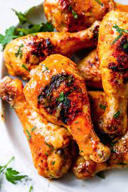

Odin Recipes

BBQ Chicken Recipe
The best BBQ chicken breast recipe doesn’t call for complicated marinades or rubs. It’s all about this easy on-the-grill or in-the-oven cooking method sweetened with BBQ sauce for moist and juicy barbecue chicken breasts every time.
Ingredients
- 4 boneless skinless chicken breasts
- extra virgin olive oil
- kosher salt , to taste
- freshly ground black pepper , to taste
- ½ cup of your favorite BBQ sauce
Steps
- Prepare the grill for direct cooking at high heat (450°F). Brush the cooking grates clean.
- Drizzle the chicken breasts with extra virgin olive oil and rub over the breasts. Season generously with kosher salt and freshly ground black pepper.
- Place the chicken breasts on the hot grill. Cover and cook for 5-6 minutes or until they easily release from the grates. Flip the chicken and cook for 4-5 minutes longer. Baste the chicken breasts with BBQ sauce, flip and cook for 2 minutes on each side. Repeat on the other side. Cook until the breasts are firm to the touch and opaque all the way through, registering 160°F internal temp (the temp will rise to 165°F as the chicken rests).
- Transfer to a plate and cover with a piece of aluminum foil and let rest for 5 minutes. Serve with more BBQ sauce if desired.